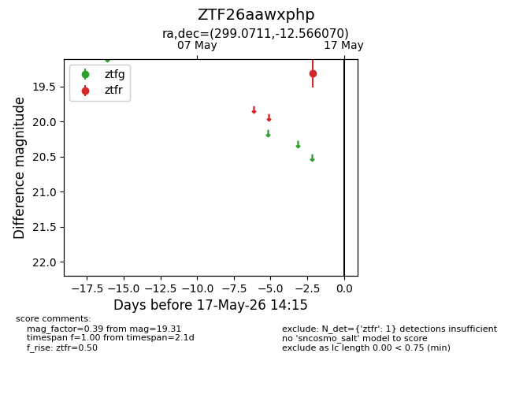
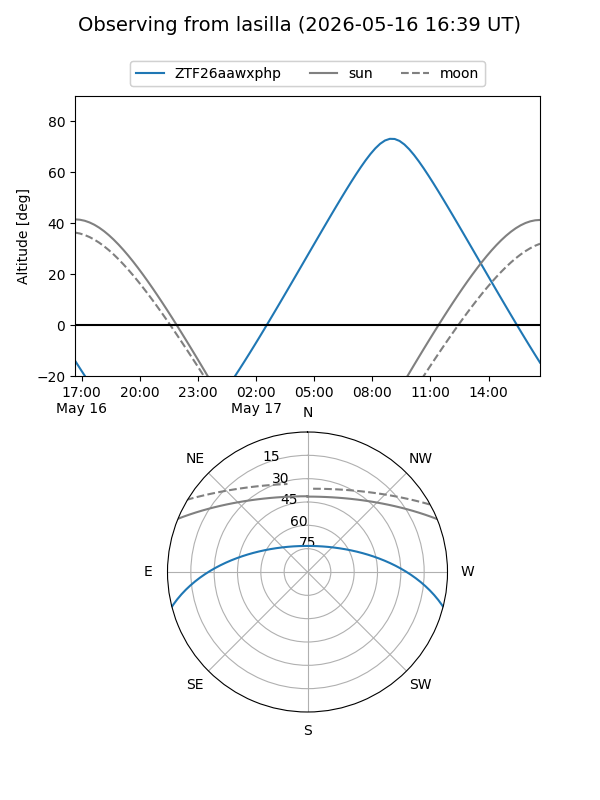
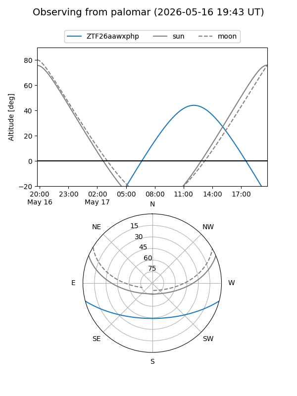

ZTF26aawxphp
Target ZTF26aawxphp at 2026-05-17 14:17
Aliases and brokers:
FINK: link
Lasair: link
ALeRCE: link
alt names
ZTF26aawxphp (ztf,fink_ztf)
Coordinates:
equatorial (ra, dec) = 299.0711,-12.56607
equatorial (HMS+DMS) = 19:56:17.06,-12:33:57.85
galactic (l, b) = (28.6985,-19.98207)
Flags:
Photometry:
last ztfr=19.31
1 ztfr detections
Lightcurve

Visibility


Additional plots